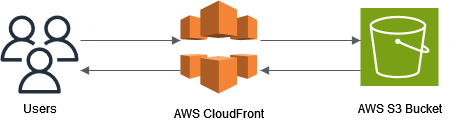
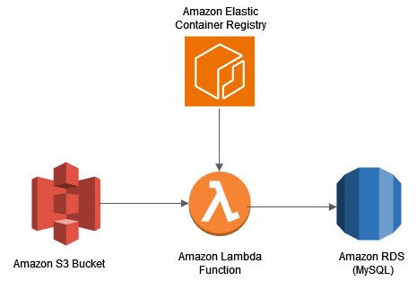
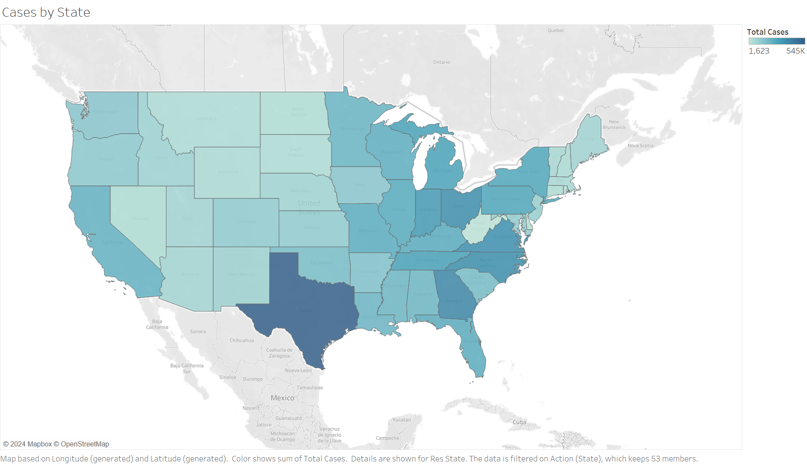

About the Data
The data that I am using comes from the CDCs website. I am using two different datasets in this analysis. The first data set is COVID cases reported on an individual level by states. It contains over 100 million rows, which contain information on the month of the case, demographics on the patient, as well as information useful to the specific case, such as their symptom status, severity, process, and interval between intial symptoms and a positive case. The second data set is data that is collected on the indicators of health insurance throughout COVID that were collected in the household pulse survey that was conducted by the US Census Bureau. This data contained a confidence interval for the percentage of americans that were on private, public, and no health insurance over time throughout the pandemic. These statistics were collected further broken down by demographics, such as age, gender, state, race, and education. The goal was to combine these two data sets to create visualizations showing the potential impact that the number of COVID cases had on the insurance coverage of Americans. With the data that was collected, I hoped to also be able to break down by demographic and create an interactive dashboard that an end user could use to get the information that they were interested in.
With the data coming from CDC, I feel very comfortable with its integrity; however, there are some important issues to note. The first is that states eventually stopped reporting their cases to the CDC, with some beginning as early as November 2021. While I will try to mostly focus in on the impact near the beginning of the COVID-19 pandemic, it is important to recognize that cases later on are less collected due to some states ceasing their reporting. While the dashboard has the ability to continuously be updated with new data, we will focus less on data collected more recently to try and find what impacts COVID had on health insurance coverage when it was at it's peak.
Cloud Architecture
To handle storing, cleaning, transforming, and hosting the data, I decided to use Amazon Web Services. My familiarity with this cloud platform would make it easy to construct the pipelines needed, as well as setup and tear down the infrastructure. While a consistent stream of data is not very useful anymore, given that this project is examining the past, this tool would be useful in checking monthly or weekly trends while COVID was going on. While not completely automated for the purpose of not abusing the CDC's data website, the process is as simple as uploading a CSV that you download from the CDC's website into a storage bucket on AWS. This is done thanks to the assistance of an AWS lambda function that is triggered by the file being put into the S3 storage bucket. The lambda function then uses Python's Pandas package to transform the files into summary statistics based on demographics that are then stored in a MySQL database. The choice to use a MySQL database was done for simplicity and familiarity, allowing for the creation of a user with very minimal privileges that would then be used in Tableau. The choice to use a lambda function over a service like AWS Glue was done for a similar reason. The lambda function had a wide range of customization, since it was just a container. This meant that I could easily pull my container from the elastic container registry and use compute time only when it was needed. The website that you are currently on is hosted in an S3 bucket and uses CloudFront to be viewed. All of the visualizations are done in a Tableau dashboard which can be viewed on Tableau Public. I created a version that pulls from my MySQL databse and one that uses CSVs in the case that I've already taken the database down.
Data Cleaning
For cleaning the data, most of the cleaning was done on the COVID data, since the Pulse survey was already in a format that would work quite well with Tableau. I used the insurance data as the base with which I would match values for specific cases to, which meant that it was clean enough to not need any processing. For cleaning the COVID case data, a lot more needed to be done. Since more of a summary was in order rather than a look at individual cases, I figured that the best thing to do was get a look at the summary for each demographic and date combination. To start, I wanted to make sure that the values were in a useable state. The two biggest issues that I came across were that there were multiple values used for missing (such as NA, None, null, Missing, and unknown), and columns that could only have yes, no, or none values had some other value. These were easy to clean since all of these values were coerced to the same value of None. From there, I also wanted to make sure that the race and ethnicity values matched with the data that was present in the Pulse survey, which would make comparing the two later much easier. From there, I calculated the summary statistics by looking at the cases grouped by the main identifying factors of month, age group, race, sex, and state. This would then count the total number of cases, as well as the number of value appearances for each variable, and the mean of the first signs of symptoms and a positive case. This reduced our over 100 million rows to just under 50,000. From here, we could put this data in our MySQL database.
About the Visualizations
For the visualizations, I wanted to try and keep them simple, while also giving users the freedom to investigate the data further. For this reason, a key portion of the visualization is a map of the US that allows the user to pick which type of coverage (public, private or uninsured) and see the average percentage of people covered in each state. This map also acts as a filter, which allows for users to click on a state or group of states, which changes all other visualizations on the dashboard. This is accompanied by a line chart of all three types of insurance over time, so you can easily visualize differences between each type of coverage. There is also a line chart for the COVID cases that are in the database that also is filtered by the states that you choose to select on the main map. There is also a small pie chart so you can see the covid cases by age, and a line chart which tracks more severe cases, like deaths and hospitalizations. Many of this visualizations were made to fit with the filters and to not overwhelm the user. There were two other graphs, the COVID cases by state and the private health insurance by education, that I created but did not feel would fit on the dashboard. You see those here on this webpage. For tableau public, it uses a data extract from the database, but the live tableau workbook pulls data directly from the database using a role that only has access to the main DB tables. You can interact with the filters using tableau public, so I encourage you to go and look around!
Main Takeaways from the Data
There were a couple of big things to takeaway from the visualizations. The first is that the insurance type is relatively stable without any large differences over time, regardless of the number of COVID cases. Another interesting thing to note in regards to the COVID cases is that you are able to see how the vaccine helped in reducing severe cases of COVID. While a year after the vaccine rollout saw a massive spike in the number of COVID cases that was almost double any other time period, deaths and hospitalizations had similar numbers to smaller numbers of COVID cases. There were also a couple of takeaways that come from the insurance coverage. Outside of Utah and a couple of states on the east coast, the midwest has some of the highest rates of private health insurance in the country, with South Dakota having the second highest private health insurance holdings rate. Overall, most of the insurance coverage comes in the form of private health insurance with a large gap between it and the other two indicators. Another interesting thing to note is that splitting private health insurance holdings based on education shows a very large difference between the four types covered, with 90% of those holding a bachelor's or higher having private health insurance. From this, we can realize that the type of health insurance that someone has is quite stable, even throughout a pandemic. We would likely not see many results of just trying to market to people who don't have health care in a pandemic, we would need to think about long term ideas to get people onto private healthcare, which would likely lead to strong retention rates. We can also see slight trends in the neighboring states having similar percentages of types of health care. While there are likely other underlying factors that are causing this (education potentially being one of them). This is a trend that we could investigate further if we were interested on expanding our market.